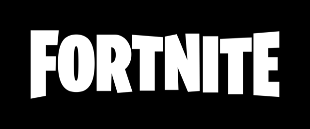
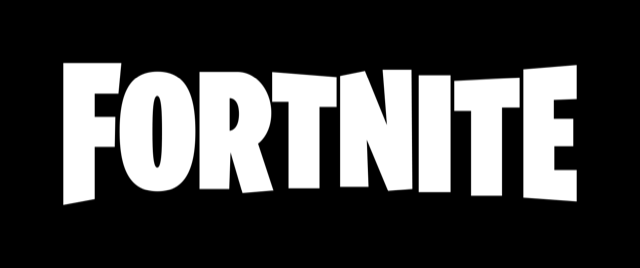
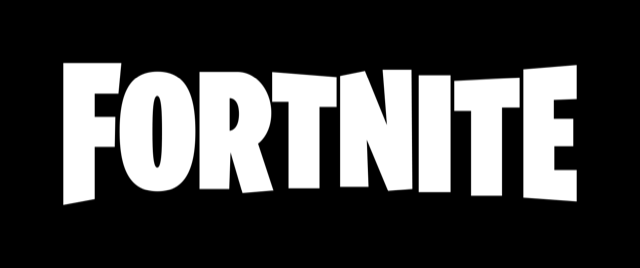
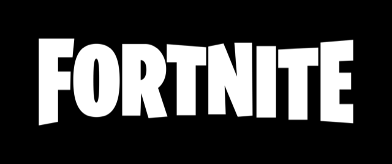

The Cube Queen Arises in Fortnite Chapter 2 Season 8's Battle Pass. You've been feeling her wrath in Fortnitemares, but now it's time you unleash her wrath. Yes, The Cube Queen herself has arisen in Chapter 2 Season 8's Battle Pass, and her Quests to unlock her (and other royal items) are available right now!
Following the Mothership's destruction, five purple cubes, one golden cube, and a blue cube land around the island. All of the purple cubes are located at the Abductor Crash sites, and the surrounding areas have been corrupted by their presence. The Golden Cube is found near Holly Hedges, while The Blue Cube lands near Camp Cod, creating Friendly Forest around itself. The rest of the cubes seen during Operation: Sky Fire are likely still inside the main Mothership wreckage located beyond the border of the island. Less than a week after the launch of Season 8, The Golden Cube begins moving. By the time of Week 2, each of the Purple Cubes have moved at least once, The Golden Cube has moved over 50 times, while the Blue Cube has not moved at all. The Golden Cube visits the Believer Beach cube and commences the first Awakening event, levitating into the air and charging the cube with an energy beam. This forces the Purple Cube to create six smaller purple cubes around itself. The process also seems to have stimulated the Cube to roll much more frequently, and towards The Aftermath. The smaller cubes also line up behind the main cube and follow it. All of the purple cubes also spread corruption as they roll. At Steamy Stacks, the original Kevin from the Chapter 1 island awoke, breaking out of containment upon sensing the presence of the gold cube. The Golden Cube charges it, but unlike the others, that particular cube does not produce any smaller cubes. The Golden Cube rolls around the entire island, charging up all the six purple cubes (including the Steamy Stacks Cube). As they roll, the purple cubes leave a large trail of corruption stretching to their original starting points. At this stage, all of them (excluding The Blue Cube) are now active and heading towards The Aftermath. On October 12-13, The Golden Cube arrives at The Aftermath, and levitates directly above the area in a similar fashion to The Awakening events. On October 19, all six purple cubes simultaneously reach The Aftermath, and break apart into smaller pieces to form The Convergence, a mysterious purple structure surrounding The Golden Cube, with an unknown purpose. The baby cubes created by each purple cube was likely a method of adding extra cube material to The Convergence structure when it was created, as the purple cubes did not lose their mass during their creation. Following the convergence, Cube Queen, the mysterious leader of The Sideways, was brought to the island, and is floating above The Golden Cube in a bubble. It is unclear whether The Golden Cube opened a portal to The Sideways to allow the queen onto the island, or if the cube itself was possessed by the Cube Queen, and gained physical form upon the construction of The Convergence.